Меня зовут Никита Белькевич (Известный под псевдонимом Somario06).Я занимаюсь созданием анимаций.
Я поведаю о том как их создавать. Лично для себя я предпочёл использовать для создания анимаций такую программу как Scratch. Многие люди считают что для создания необходим Adobe Animate, но это не так.
Для создания анимаций можно использовать даже Paint. Однако вам нужно иметь очень много терпения и желания.
Scratch это язык "програмирования". Его код состоит из блоков.
Пример работы такого кода.
В скретче нет кадров для анимаций.
Вместо них я использую костюмы.
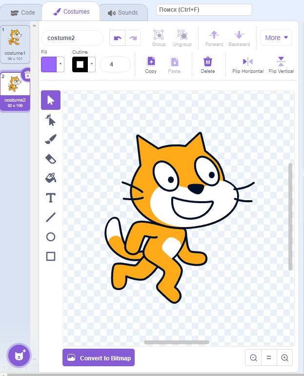
Каждый костюм можно переключать с определенной переодичностью. Для этого нужно задать переключиться на первый костюм, затем заставить ждать
(в моём случаи 1 секунду однако, значение можно изменить) а потом повторить.
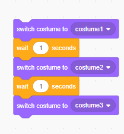
При создании анимации важно учитывать fps.
FPS-Количество кадров в секунду.
Если значение в ждать равно 0.1 секунды. то мы переключая костюмы можем добиться скорости в 10fps.
Если значение в ждать равно 0.01 секунды то мы переключая костюмы можем добиться скорости в 30 fps.
(30 fps это максимальное значение fps в scratch в стандартном режиме работы.).
Теперь давайте создадим что-то
>
Для начала нарисуем персонажа.
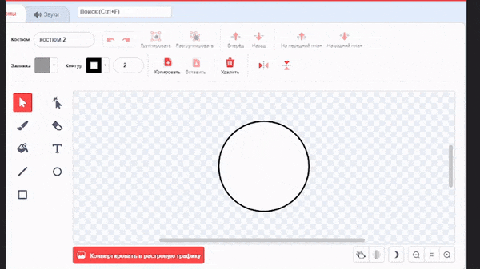
Отлично.
Теперь нужно создать несколько кадров анимаций.
Для того что-бы не рисовать персонажа заного мы дублируем костюм.
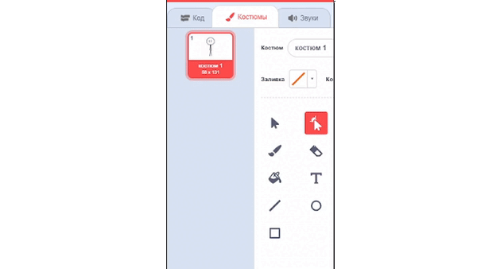
Теперь для начала создадим простенькую анимацию.
К примеру зделаем так что-бы в стикмана кинули ведро.
Для этого стикману нужно повернуться
В Turbowarp(модифицированная версия scratch) есть функция отображения предыдуших костюмов.
Для Scratch нужно будет скачать расширение Scratch Addons
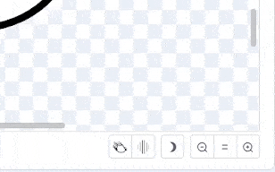
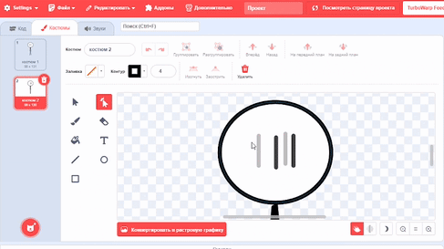
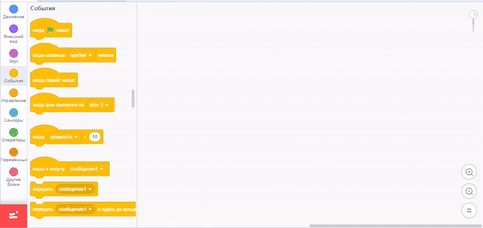
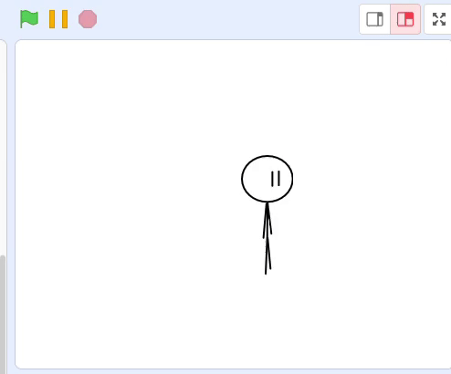
Теперь наш персонаж поворачивается.
Теперь нужно будет взять картинку ведра и загрузить её в скретч.
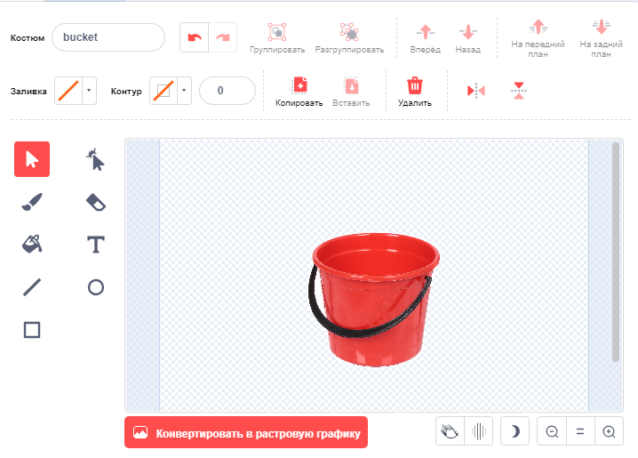
Теперь я напишу код.Его смысл бувально заключается в том что-бы идти к персонажу.
Также для создания комичной ситуации Я заставлю его переворачиваться на 30 градусов.
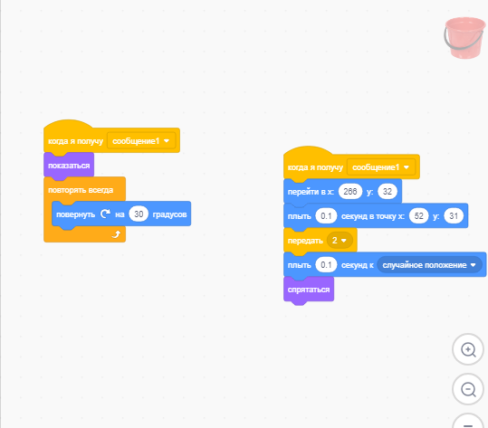
Теперь вы можете увидеть запустить анимацию, Нажав на флажок.
Также при особом желании можно заменить ведро на любой объект.
Например на пакет моего знакомого.
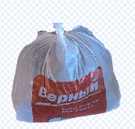
На последок стоит сказать что можно объединять скретч и прогграммы для монтажа.
Записывая на зелёном фоне. К примеру вот анимация в которой я использовал данный способ.


{kind=link}